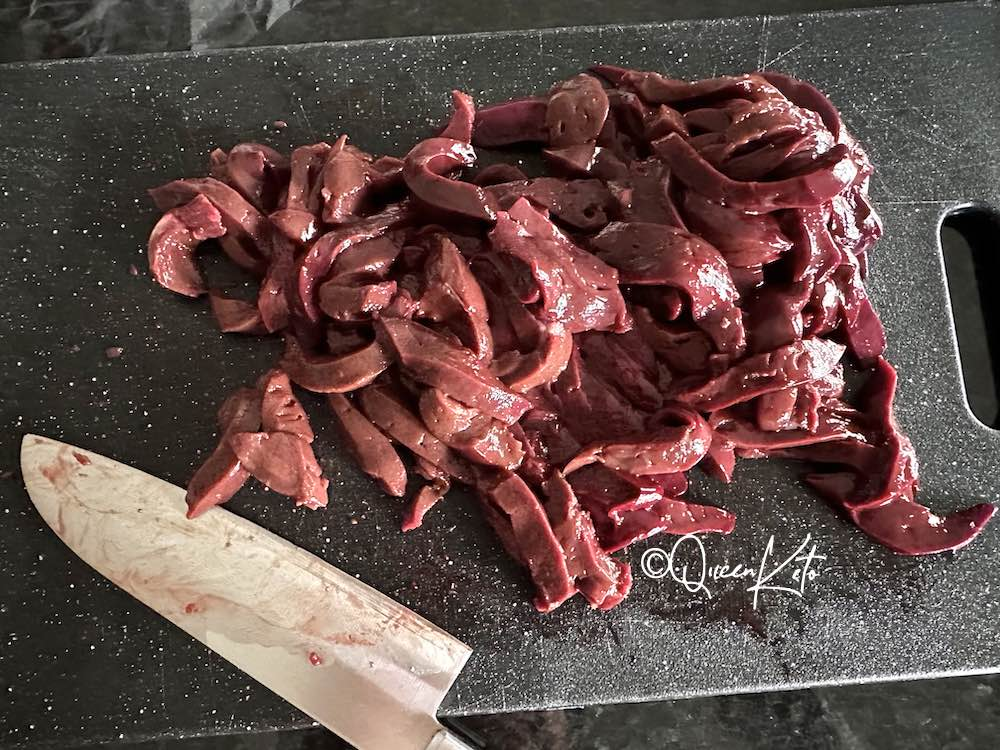
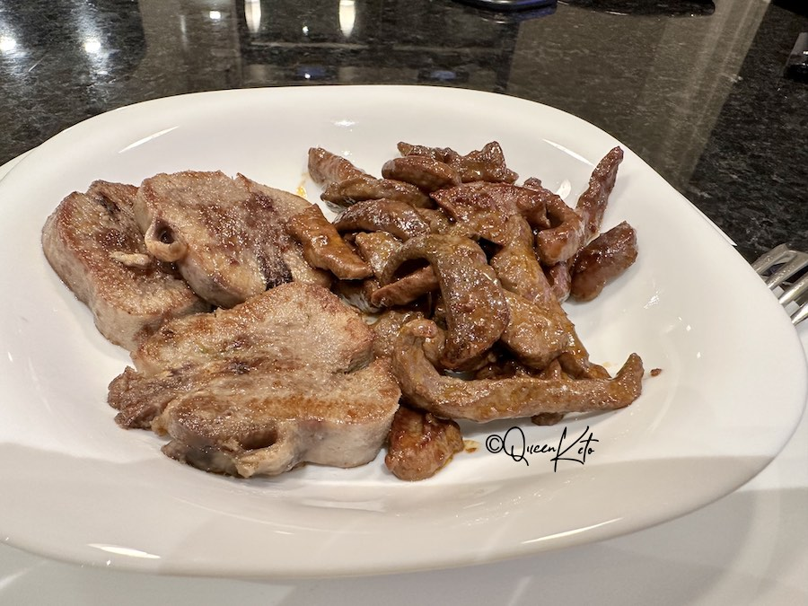

Zero-Carb Carnivore Recipes
Sautéed Heart & Liver

Ingredients
- 200g beef heart, sliced
- 200g beef liver, sliced
- 2 tbsp butter
- Salt, to taste
- Black pepper, to taste
- 1 tsp garlic powder (optional)
Instructions
-
Pat the heart and liver slices dry with paper towels. Season with
salt, pepper, and garlic powder if using.
-
Heat a large skillet over medium-high heat and add the butter.
-
Once the butter is melted and bubbling, add the heart slices. Sauté
for 2-3 minutes per side until browned.
-
Add the liver slices to the skillet. Cook for 1-2 minutes per side,
ensuring not to overcook.
- Remove from heat and let rest for 2 minutes before serving.
